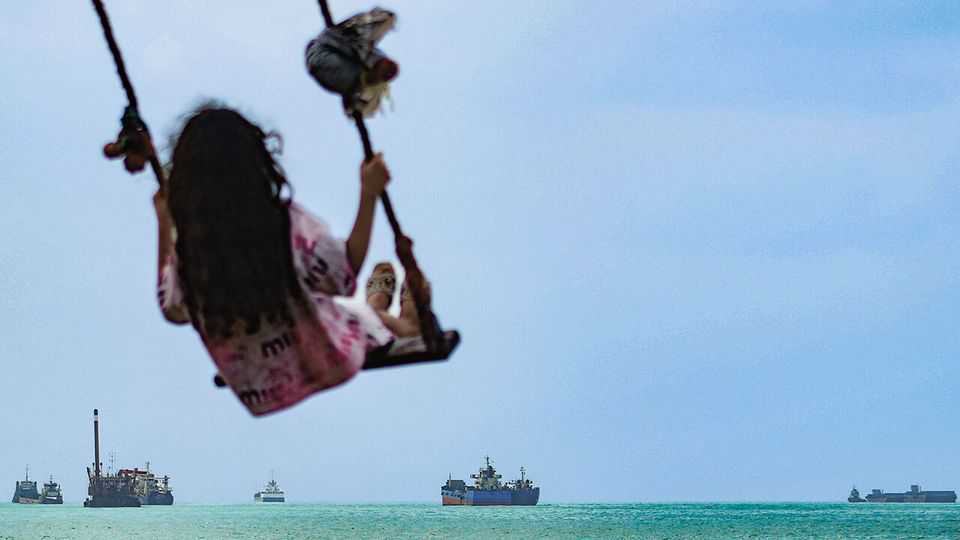
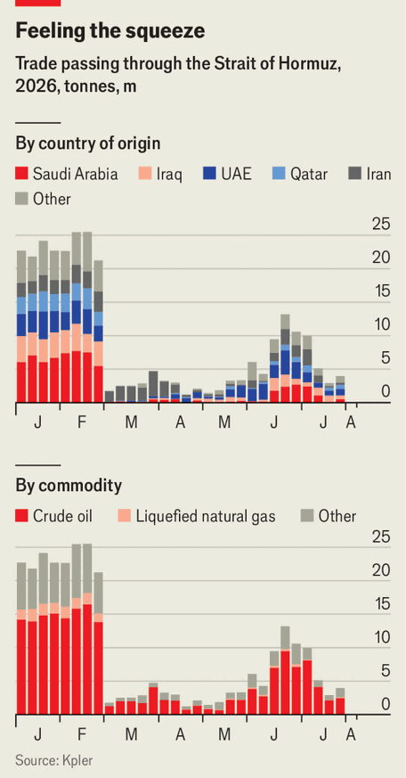
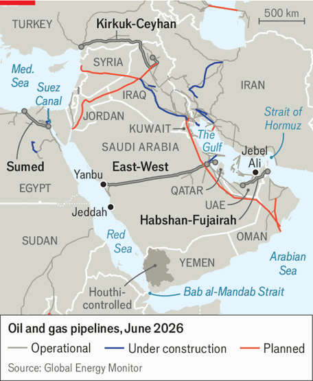
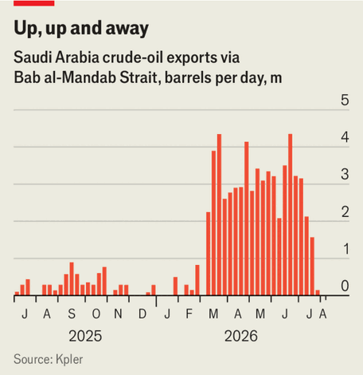
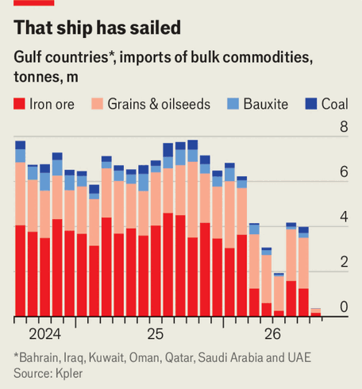

How long can Iran weaponise Hormuz?
Longer than the world hopes, according to our Hormuz dependency dashboard

Aug 6th 2026
For years the world has feared that Iran has been pursuing nuclear arms. Five months of war have taught the country’s rulers they were already in possession of another formidable weapon. Geography and firepower give them de facto command of the Strait of Hormuz, through which a fifth of the world’s oil and liquefied natural gas (lng) normally flows. Choking that artery gives Iran’s leaders immense leverage over their adversaries.
Iran’s foes hope Hormuz will prove to be a wasting asset. Shutting Hormuz is “a card you can play once,” said Chris Wright, America’s energy secretary, in May. Gulf states are busily seeking alternative export routes. Tom Barrack, Donald Trump’s envoy to Iraq and Syria, reckons the strait will be “an afterthought in two years”.
The Economist has interviewed experts and analysed data to build a “Hormuz dependency dashboard” to test these claims. It points to three conclusions. First, the staying power of the Iranian threat varies by commodity and country. Second, Iran’s ability to cash in on the strait will diminish but may never vanish. Third, even if the fees Iran can charge fall over time, its strategic leverage will not necessarily fade in step. Indeed, it may deepen as the regime institutionalises its regional influence.

Start with how much Hormuz traffic could simply circumvent it. Some 15m barrels of crude oil crossed the strait daily before the war. That looks easiest to divert. Saudi Arabia’s east-west pipeline, which avoids the strait by crossing the peninsula to Yanbu on the Red Sea, carried just 1m barrels a day (b/d) for export before the war. Today it is running at its full 7m b/d capacity. Nearly 5m b/d of that is exported; the rest feeds coastal refineries. The United Arab Emirates (uae) has maxed out its Habshan-Fujairah pipeline, which carries 1.8m b/d, up from 1m b/d before the war. Some 200,000 b/d flows through a smaller, once-idle Iraqi pipeline to Turkey.
That narrows the crude-export deficit to 10m b/d. Now add new pipelines likely to be built as a result of the war (see map). Acquiring land poses no problems in the Gulf’s command-and-control economies, says a lawyer familiar with the subject. The most advanced project, the uae’s, would run parallel to the existing line, adding 1.8m b/d by late 2027.

Iraq aims to raise its pipeline’s capacity to 1m b/d within a year. It also plans a new one to link its southern fields with existing routes to Jordan, Syria and Turkey. Contracts for the 2.5m-b/d project are being awarded: it should be done within four years, says Rahul Choudhary of Rystad Energy, a consultancy. So by 2030 another 5m b/d of crude could bypass Hormuz.
But that still leaves the same amount with no alternative route. And none of these fixes is foolproof. Iraqi projects could be derailed by security risks and cross-border rows. Many dreamed-up pipelines never see the light of day. Tankers leaving Yanbu for Asia usually sail via the Bab al-Mandab strait, where they are vulnerable to attacks by Iran-allied Houthi rebels. Saudi crude could travel via the Suez canal or Egypt’s Sumed pipeline. But even that route may not be safe: on July 29th a drone hit a tanker at Damietta, a port near Suez.

Iran—or its proxies—could attack new infrastructure that it fears depletes Hormuz’s power. Even if a deal is reached, the risk of attacks could still push up insurance and financing costs for such projects.
Rerouting refined products is even harder. Gulf countries shipped nearly 5m b/d of petrol, diesel and other fuels via Hormuz last year. No overland pipeline alternatives exist for these. Saudi Arabia is planning one as part of a 2m-b/d expansion to its east-west corridor. But that is still at an early stage and would need a similar increase in Yanbu’s capacity. Iraq is sending 1,000 lorries of fuel oil to Syria a day, up from ten pre-war, but the route is slow and pricey. Syria has earned $15m-20m in transit receipts from the traffic since the war began. New refineries outside the Gulf would take longer to build than pipelines and cost billions of dollars.
The problem is most acute for lng, exported almost exclusively by Qatar. No lng pipeline is under construction and no feasibility studies have been published. Qatar could lay simpler gas pipes to Oman, but they would need to carry as much gas as Russia’s four-string Nord Stream pipelines were once scheduled to deliver to Europe. More implausible still, Qatar’s entire liquefaction complex would need recreating on the Arabian Sea coast.
There is some room for hope. Most importers can, in time, wean themselves off Hormuz supplies. A few years of high prices could spur an extra 2m-3m b/d from the Americas and beyond. China’s refineries still hold ample spare capacity. lng is riding the fastest expansion in its history. So Iran’s leverage over global prices will weaken before the decade is out.
The same is not true of its hold over its Gulf neighbours—and not just because a sizeable share of their energy exports will still need Hormuz for years. Many also depend on the strait for imports. The Gulf Arab states rely on external suppliers for 95% of their grain, but only Saudi Arabia has decent bulk-handling terminals, and these are not big enough to supply the whole region. Nor is moving lots of grain, iron ore or bauxite overland viable: a single Panamax vessel carries 60,000 tonnes of cereal, enough to fill 2,000 trucks.

One obvious fix would be more regional railways, but these would also be slow and costly to build. Past mining-railway projects in Australia, built across similar terrain, have cost $12m-15m a kilometre. So a Red Sea-to-Qatar line could top $25bn.
The Gulf states have strategic grain stockpiles that typically cover four to six months of demand, but no equivalent for containerised goods such as fresh food, medicines and appliances. The region’s biggest container port, Jebel Ali, which has a capacity for nearly 20m 20-foot equivalent units (teu) a year, sits inside the Gulf. Outside the strait, the largest is Jeddah, which can hold 7.5m teu. It was already running near full tilt before the war, says Alexis Ellender of Kpler, a data firm.
So our analysis suggests that Iran will be able to weaponise Hormuz for some time—and monetise it. Gulf states’ varying exposure may mean they diverge in what they will tolerate to get their ships moving. Qatar has suggested that it could accept temporary fees; others have held a tougher line. But even the hawkish uae has softened: it is starting to trade with Iran again and their diplomats are talking.
On August 5th an Iranian official said the regime had agreed on a transit route with Oman and urged “certain third parties” not to meddle. Assuming this gives Iran control of Hormuz, how much could it make? An Iranian mp claimed in June that the country was collecting $1.5m-2m per vessel transiting the strait. That implies takings of more than $35bn a year, assuming traffic at about 70% of pre-war levels.
That figure is eye-popping—and implausible. Rates set at gunpoint, in a market with nowhere else to go, will not survive a deal allowing near-normal flows to resume. Draft legislation submitted to Iran’s parliament envisages rates based on cargo volume, value and vessel type, with one constraint: the charge must stay below the cost of the next-best alternative.
Shahin Iraninejad of gssi, a sovereign-risk adviser, points out that another legislative proposal posits an average fee of €3 a tonne in Iranian waters and €2 in international waters. He puts expected future income at a more modest $2bn-3bn a year. As bypass capacity grows, that would drop—but not uniformly. Crude tankers can hope for a bargain soon; oil-product, lng and bulk carriers may face higher fees for years.
Would such revenue flows be durable? As long as charges are predictable, easy to settle and below war-risk premiums, many shippers will probably pay, says Richard Meade of Lloyd’s List, a shipping journal. But that would change if vessels repeatedly cross the strait without paying Iran. A tension emerges: Iran needs peace with America for its fee regime to function. But it will need to keep up attacks on disobedient tankers to ensure the fees are paid—which could make peace hard to maintain.
On the brighter side, Iran might drop its fees faster than it needs to. Its strategic objective, says Mr Meade, appears to be maintaining market participation and reinforcing its role as gatekeeper, rather than maximising revenue. It wants something lasting: a governance system—whether a bilateral framework with Oman, a maritime-services architecture or a permit regime. The ease with which Iran seized its new weapon shocked its foes. Its grip on Hormuz looks set to outlast the war. ■